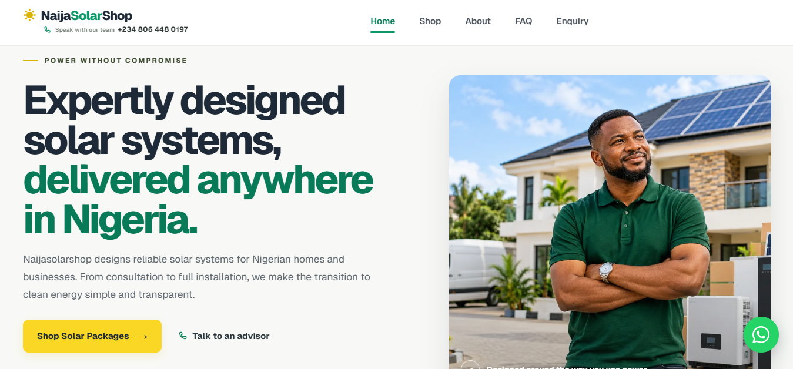

PHP MVC web application
NaijaSolarShop
A Nigerian solar product and package storefront where households and businesses can explore solar solutions, review product specifications, request quotations, and contact solar advisors.
Application flow
Clear boundaries.
Connected layers.
A custom PHP MVC request lifecycle separates routing, application logic, data access, and presentation.
& bootstrap→Router
& routes→Controller
& services→Repository
& PDO / MySQL→Views
& response
Implemented capabilities
- Product discoveryDatabase-driven catalog with 30 records, search, brand, tier and capacity filters, sorting, pagination, and detailed specifications.
- Enquiries & quotationsProduct-specific requests, WhatsApp handoff, and enquiry forms with server-side validation, CSRF protection, session rate limits, and duplicate prevention.
- AdministrationProduct editing, activation and archiving; enquiry status management; review moderation; and subscriber management.
- Security foundationsPassword hashing, failed-login throttling, session regeneration and expiry, CSRF checks, account-status checks, and database integrity controls.
Engineering verification
0 syntax failures
0 syntax failures
migrations
the catalog
Local code, database, and HTTP checks. These are not production load-test results or independently verified customer outcomes.
Scope & decisions
The public application is enquiry-led: customers can explore products and request advice or quotations. It does not currently provide cart and checkout, online payments, order management, automated system sizing, delivery tracking, affiliate payouts, or bulk newsletter campaigns.